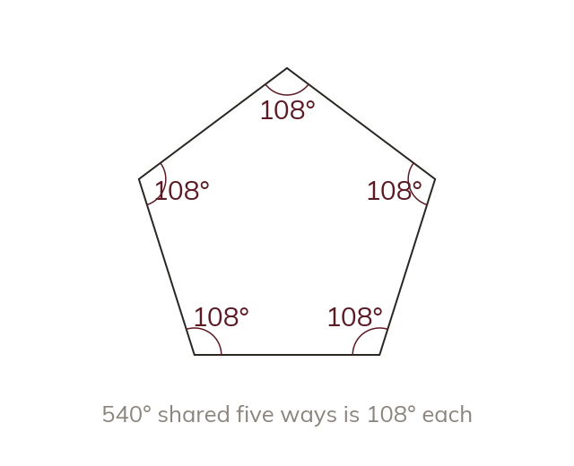

Interior angle of a regular polygon
In a regular polygon, every interior angle is equal. So each one is the total ÷ n: (n − 2) × 180 ÷ n.
In a regular polygon, all n interior angles are equal, and together they sum to (n - 2) × 180 (from yesterday). Since they are all equal, EACH interior angle is the total shared out n ways: (n - 2) × 180 ÷ n.